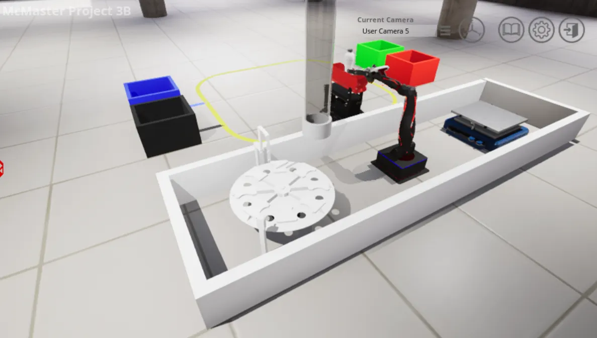
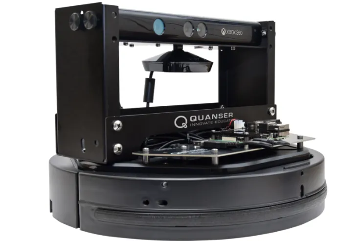
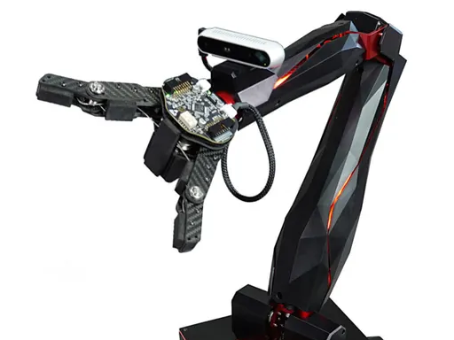
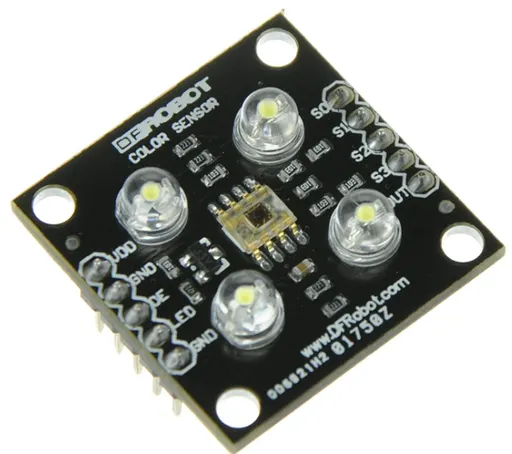
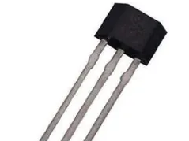

Built a multi-robot sorting system that autonomously identifies, picks, transports, and deposits recyclable materials into the correct bins — combining line-following algorithms, multi-sensor fusion, and coordinated pick-and-place control, all programmed from scratch in Python.



Design a fully autonomous system to sort recyclable materials by type without human intervention. Two robots needed to work in coordination: a Q-Arm to pick materials from a dispenser and load them onto a mobile Q-Bot, and the Q-Bot to navigate a track, identify the correct bin, deposit the materials, and return for the next cycle.
The core technical challenge was reliable bin identification. The track used color-coded markers at each bin location — red, green, blue, and black — but a single color sensor couldn't reliably distinguish between the black navigation line and the dark bin markers. Overlapping reading ranges across colors made single-sensor classification unreliable.
The solution was a dual-sensor architecture: a dedicated color sensor for line tracking paired with a Hall-effect sensor to detect magnetic markers embedded at bin positions. This fusion approach let the Q-Bot cleanly separate navigation from classification, producing repeatable bin identification across all four material categories.


The entire control system was written from scratch in Python with a three-layer architecture:
Development started with pseudo-code mapping the full workflow before implementation, making it easier to visualize state transitions and catch logic errors early.
All code was developed and validated in Quanser Interactive Labs before touching physical hardware. The simulated environment enabled rapid iteration on sensor thresholds, timing parameters, and error recovery — catching issues like color sensor angle sensitivity and line-tracking edge cases without risking the robots.
Several issues surfaced during simulation that required systematic debugging:
The completed system autonomously sorted all recyclable material types into the correct bins with reliable accuracy. From a blank Python file to a working multi-robot coordination system, the project demonstrated end-to-end integration of sensor fusion, autonomous navigation, and robotic control.